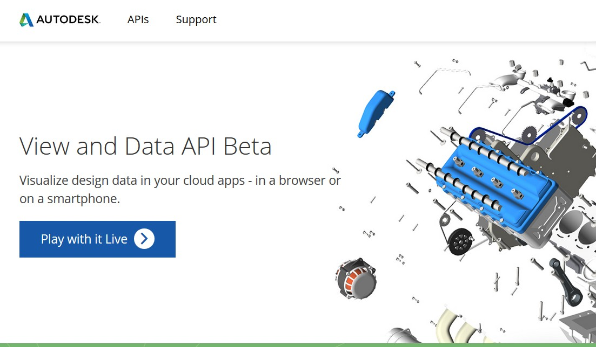
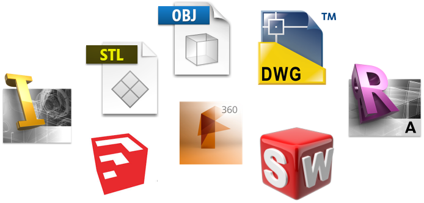
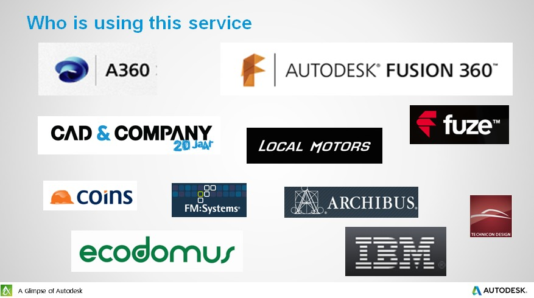

Web和移动设备上浏览3D数据
本ppt短链接 http://t.cn/RAR2YKc
About Me
杜长宇 Daniel Du
Developer Evangelist at Autodesk
@daniel_du
Web上浏览3D数据
你觉得这个太难实现或者为时尚早吗？
不，其实很简单，而且正是时候
先看看别人在玩儿什么吧
- bldng360.com 很多3D在线建筑模型
- Autodesk Viewer ，可以随时上传浏览3D模型
- Autodesk View and Data 实例集，包括很多三维模型和适用于3D眼镜虚拟现实场景
- 酷炫的渲染效果
先看看别人在玩儿什么吧
- sketchfab 很多3D在线建筑模型
- cl3ver ，也有很多很酷的模型
- pennyskateboards，滑板定制网站，可以在电脑或手机上查看
回到我们身边，我们现在问题是什么？
太多数据格式、太多的软件
三维模型设计师用 3D Max/Maya...
好多各行业的设计师用 AutoCAD
工业设计师用 Solidworks/CATIA/Fusion...
建筑工程师用 Revit
设计结果都是专有的数据格式
数据那么多，我想去看看
啊？ 要安装那么多软件？！
要崩溃了！！
WebGL
提供JavaScript API 来在浏览器中渲染3D模型
虽然还不是W3C标准...
但是几乎所有现代浏览器都支持

不过、原生WebGL也不是那么好掌握的...
Autodesk 推出了 3D/2D 浏览器...
View and Data API
上传你的模型
REST API
在浏览器和移动设备中浏览
JavaScript API
简单、而且免费使用!
什么东东？ 现在试试...
https://360.autodesk.com/viewer你想让你的在线商务网站是这样的...

还是这样的?
更多示例，看视频
http://t.cn/RATSI2E
看视频,在移动设备上运行
http://t.cn/RATS8Jk
支持的数据格式
ipt, neu, stla, stl, xlsx, jt, jpg, skp, prt, dwf, xls, png, sldasm, step, dwg, zip, nwc, model, sim, stp, ste, f3d, pdf, iges, dwt, catproduct, csv, igs, sldprt, cgr, 3dm, sab, obj, pptx, cam360, jpeg, bmp, gbxml, exp, ppt, doc, wire, ige, rcp, txt, dae, x_b, 3ds, rtf, rvt, g, sim360, iam, asm, dlv3, x_t, pps, session, xas, xpr, docx, catpart, stlb, tiff, nwd, sat, fbx, smb, smt, ifc, dwfx, tif
还在继续增加中...
可能的应用场景
物业管理
电子商务商品展示
展品在线虚拟体验
生产管理、设备运行监控
游戏、虚拟现实
...
谁在用View and Data API?
现在就开始
github上n多示例代码参加我们的云助力活动
你是否有好的想法了？需要帮助吗？ 参加我们的Cloud Accelerator活动吧！

详细看看 View and Data API
客户端JavaScript API关注我们的微信公众号
或搜索： AutodeskADN
保持联系
@daniel_du